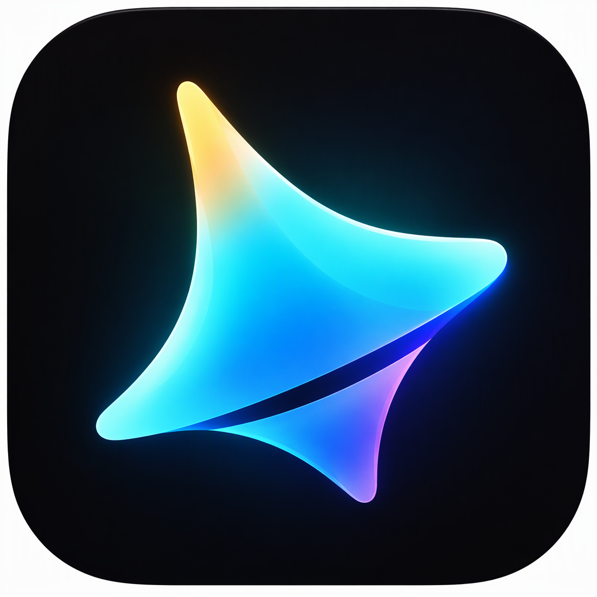
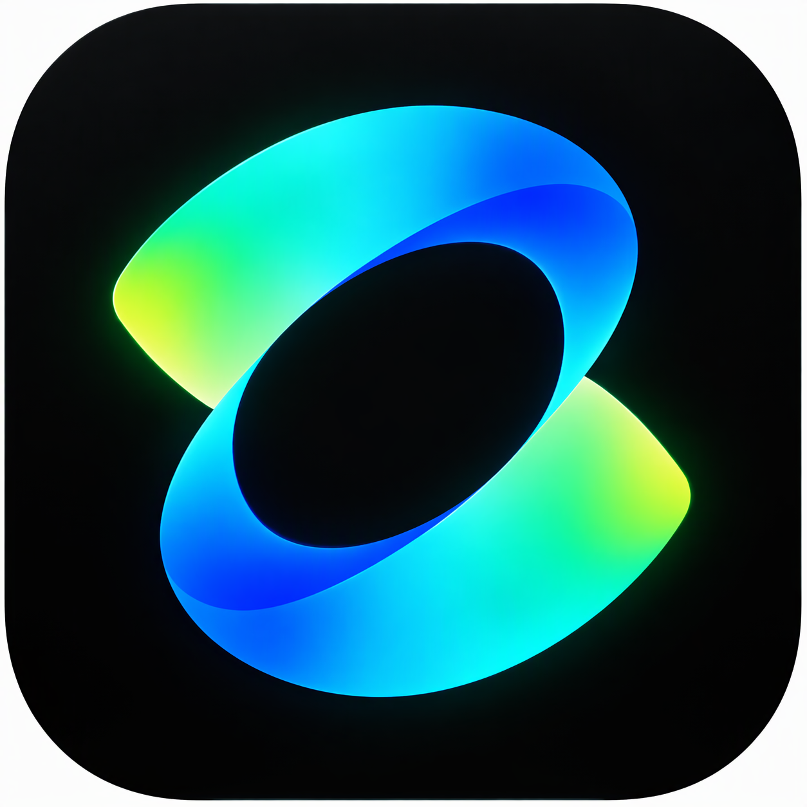
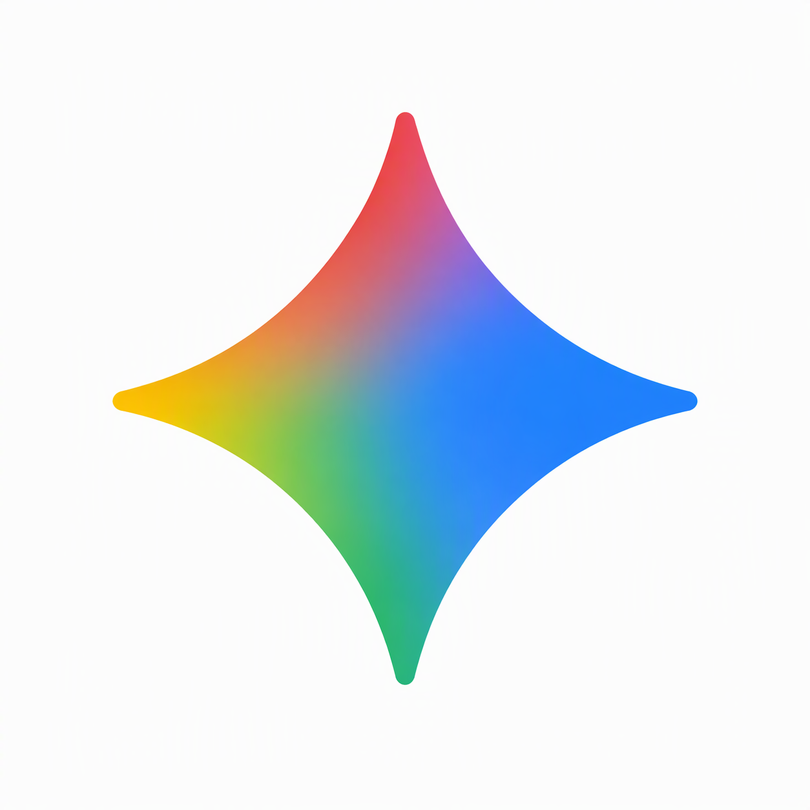

你在字节干什么？
做 Seedance 模型效果评测与调优，把人的判断转化为优化反馈。
你好呀，我是婉祯
吴婉祯 · 吉林大学 · 信息工程
字节跳动 Seed · Seedance 模型效果评测与调优
还可以体验还没对外上线的产品。比如提前坐坐豆包汽车——我不会开，负责坐后排体验；也可以提前玩玩豆包手机。模型这边，也会有内测和专家团的机会。
版本号与权限细节待公开确认，本页只用泛称。
字节内部还有特别开放的技术分享。很多人会把自己亮眼的技术内容开源出来，这是很多地方少见的。利用好这些资源，成长会很快。都说字节一年人间三年，和这件事很有关系。
我和子木老师、泡泡老师不太一样：我不是专业的老师。我是非本专业、纯转行走进 AI 和大厂的。
今年本科毕业，校招进入字节跳动 Seed，做 Seedance 模型效果评测与调优。
毕业后，母校吉林大学邀请我作为优秀校友去做分享，也上了学校公众号。
我以一个刚毕业、先一步进入职场的师姐身份，讲讲自己是怎么转到 AI、走进字节的。
接下来，我会展开这四个问题——
我需要快速拿到一张大厂入场券
起点
月薪8,000元
正式工作后，
工资翻了两倍多
实习期间，怎么准备春招？
项目和经历贴合
自己想去的方向
对照岗位JD
与公司需求
让招聘方看到
自己的优势
项目为什么开始
我要完成什么
我是怎么做的
最终取得什么成果
重点关注BOSS直聘
每天投够平台上限
把自己的亮点放在前面
简历方向与投递岗位对应
专业能力：用STAR法则讲清项目
项目、困难、
方法、成果
责任意识、
沟通、协作
调研产品和需求，
思考可能的问题
基于公开信息进行判断
很多东西都不会
拿到AI行业入场券
实习月薪8,000元
走进头部大厂核心部门
正式工作后，工资翻了两倍多
做 Seedance 模型效果评测与调优，把人的判断转化为优化反馈。
可以借助 AI 工具，从动手做项目、测试和修改开始。
不是；学历只是筛选的一部分，还要看经验与能力能否解决岗位问题。
先看真实招聘、选方向，再针对岗位投递，把项目经历讲透。
找一批真实岗位，圈出反复出现的能力要求。
对照岗位要求，明确可用经验和需要补的能力。
借助 AI 工具，把想法做出来，再测试、修改。
把相关经历和项目放在前面，突出需求匹配。
明确投递岗位，有意识地安排投递量。
讲清目标、分工、难点与解法，验证结果、总结经验。
师弟师妹，还有很多朋友都会问——
大家日常用到的产品和背后的模型，不是一回事。前两家对应的是视频模型，Gemini 这边对应的是图像模型。



对比不同模型版本，或与竞品生成的视频。
观察画面质量、动作自然度，以及是否符合提示词要求。
对比打分、记录偏好，找出具体问题并分析原因。
把人的判断转化为反馈，为模型优化提供依据。
RLHF：用人类的偏好和评测反馈去训练、优化模型，再验证效果。可以记成：人类偏好 / 评测反馈 → 训练优化 → 效果验证。
进阶部分就是走这条调优链路。一开始看不懂很正常；我当时也看不懂，现在也不需要全部看懂。
只要懂链路，会用 vibe coding 检验效果、做数据溯源，能拿出成果就行。
右图是真实相关代码截图，用来帮助理解这条链路，并不等于完整的 RLHF 架构。
小红书上的vibe coding教程和案例，就告诉我们vibe coding就是普通人玩儿的。
答案是当然可以。
用 RAG 和向量库，根据已有资料回答问题，而不是凭空编。
本页已直接内嵌本地离线页面，不用再点开也能看；不是部署好的完整在线系统。
在公司搭过让多个 Agent 协作、自动生产视频广告的工作流。
本页已直接内嵌本地离线页面，不用再点开也能看；不是部署好的完整在线系统。
题材经过剧本、分镜和视频生成，变成能看的作品。
本页已直接内嵌本地离线页面，不用再点开也能看；不是部署好的完整在线系统。
视频尚未逐条审看，这里只放播放位置。若还没拷到 media 文件夹，请用卡片里的「选择本地文件」。
multi-agent 自动化生产 · 按文件名对应
multi-agent 自动化生成 · 未与「成片1 / 序幕」对应
multi-agent 自动化生成 · 未与「成片1 / 序幕」对应
很多人会问——
其实不是。下面三张是他人案例，不是我本人的聊天、录用通知或简历。点击可单独放大。
既有清华北大，也有双非、专科背景的同学，大家做着相似的工作。
公司还要看：你的经验和能力，能不能解决它眼前的问题。
这是我的观察，不是官方统计。
不必样样比别人强，但要让人看见：这件要做的事，你能接住。
去招聘平台找一批感兴趣的岗位，看它们反复要求哪些能力和项目经验，再对照自己：已经具备什么，还要补什么。
多模态、具身智能可以关注，但具体有没有适合你的机会，还是要看实际招聘，不能只追名词。
不要拿一份通用简历投所有岗位。先想清楚投递岗位，再有意识地安排投递量。投 Agent 岗，就重点展示任务拆解、工具调用、多 Agent 协作；其他经历围绕需求分清主次。
为什么做这个项目，原理是什么，你负责哪一块，遇到什么困难，为什么选这个方案，怎么和别人协作，又是怎么把结果交付出来的。
向往大厂、向往 AI，都可以。
更要紧的是敢学、敢做，再把它做完。
本地离线页面，不是完整在线系统。按 Esc 或点关闭即可返回演示。